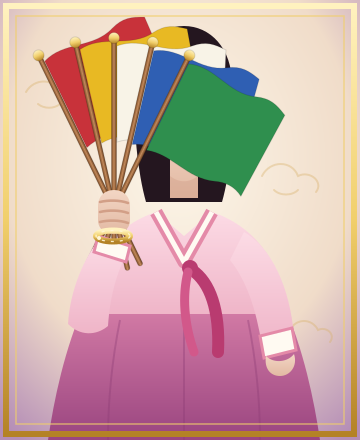

홈 › 선희보살 인사말
선희보살 인사말월하당 큰신딸 · 2001년 신내림
어머니 송만신께서 9월 19일 신령님 곁으로 가셨습니다. 선희보살 직접 상담은 진오귀굿을 마칠 때까지 쉽니다.
운영팀 알림 — 그동안에도 선희당 선생님 30인은 24시간 상담 중입니다^^

안녕하세요. 선희보살입니다.
저는 2001년, 서월산 아래 월하당에서 송만신 어머니께 신을 받았습니다. 스물다섯 해 동안 어머니 곁에서 굿을 배우고, 점사를 배우고, 사람을 대하는 법을 배웠습니다.
어머니께서는 늘 말씀하셨습니다. “아픈 손님은 병원부터 보내라. 신령님은 사람 살리는 일을 막지 않으신다.” 저도 그 말씀대로, 점사를 보기 전에 손님의 마음부터 듣겠습니다.
오방기를 들 때면 오른손엔 늘 어머니가 주신 금팔찌를 찹니다. 신을 받던 날 어머니께서 “네 손이 깃발보다 먼저 떨면 안 된다” 하시며 채워 주신 것입니다. 그 무게만큼 정성껏 모시겠습니다.
선희당을 찾아 주신 모든 손님께 좋은 기운이 닿기를 빕니다.
선희보살 합장
| 신명 | 선희보살 |
|---|---|
| 신내림 | 2001년 · 서월 월하당 송만신 어머니께 (큰신딸) |
| 모시는 일 | 신점 · 오방기 점사 · 재수굿 · 진오귀굿 |
| 직접 상담 | 매주 화·목 예약제 상중 · 쉼 |
| 신어머니 신당 | 월하당(月下堂) 바로 가기 |
선희당 홈페이지와 전화(060) 상담은 (주)달무리컴퍼니가 운영을 대행합니다.